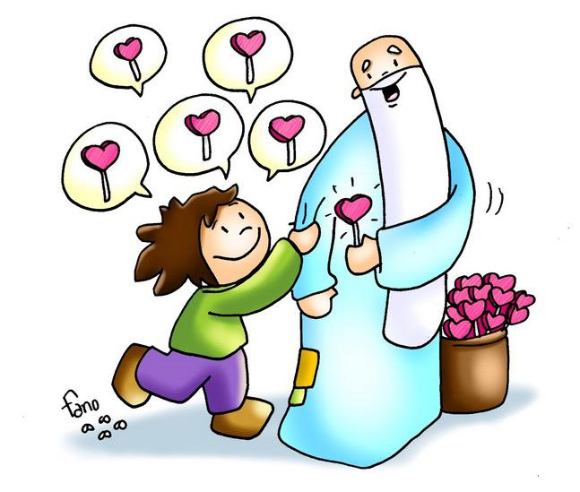
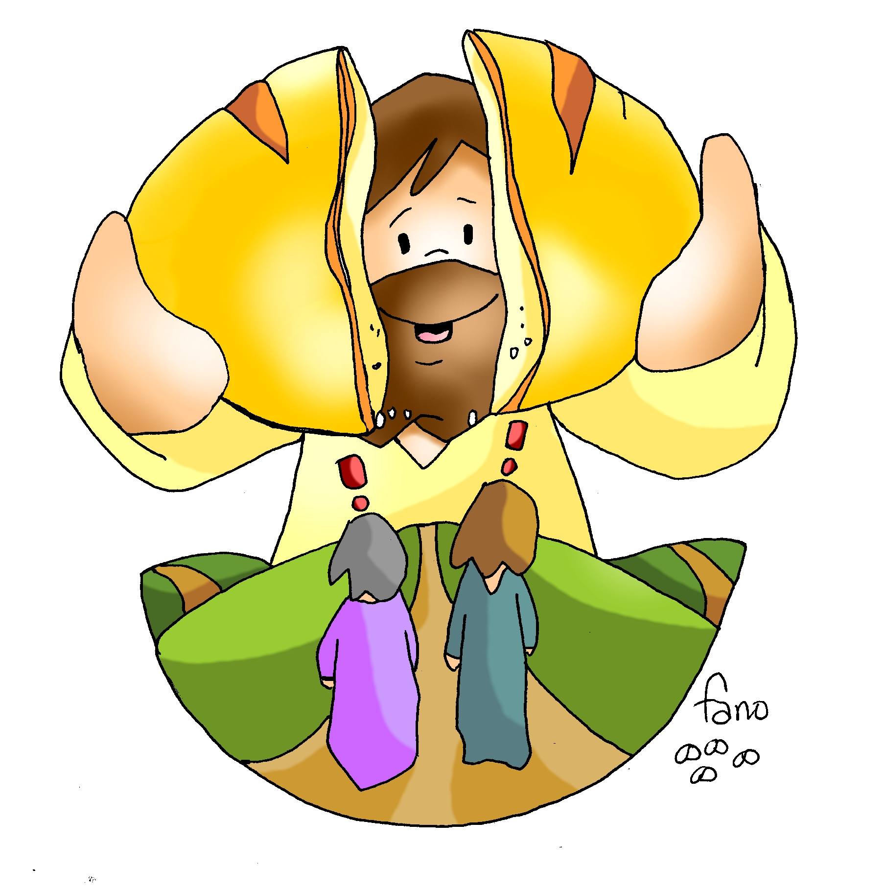
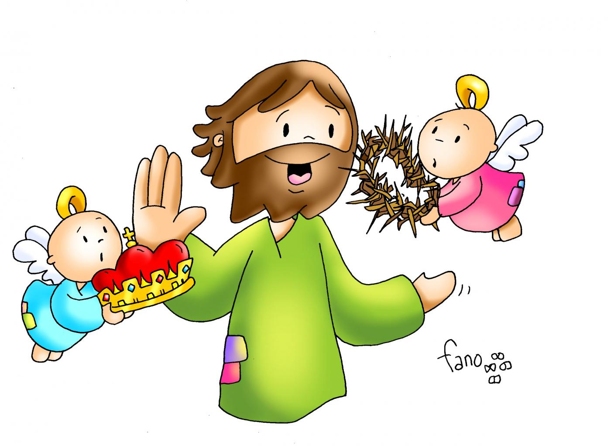
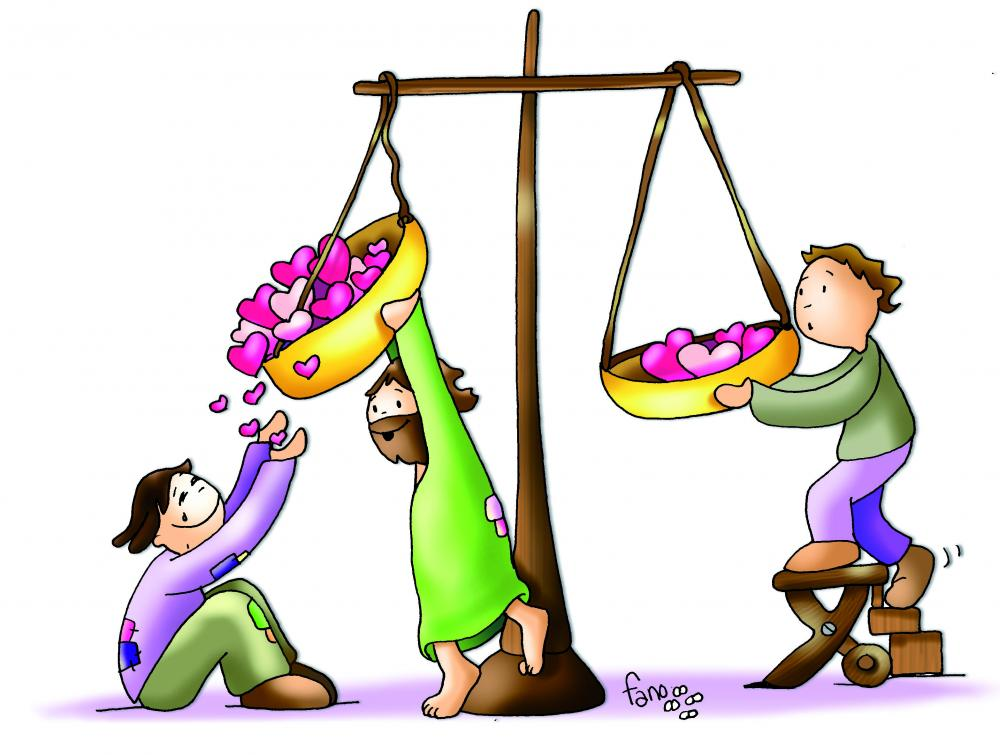
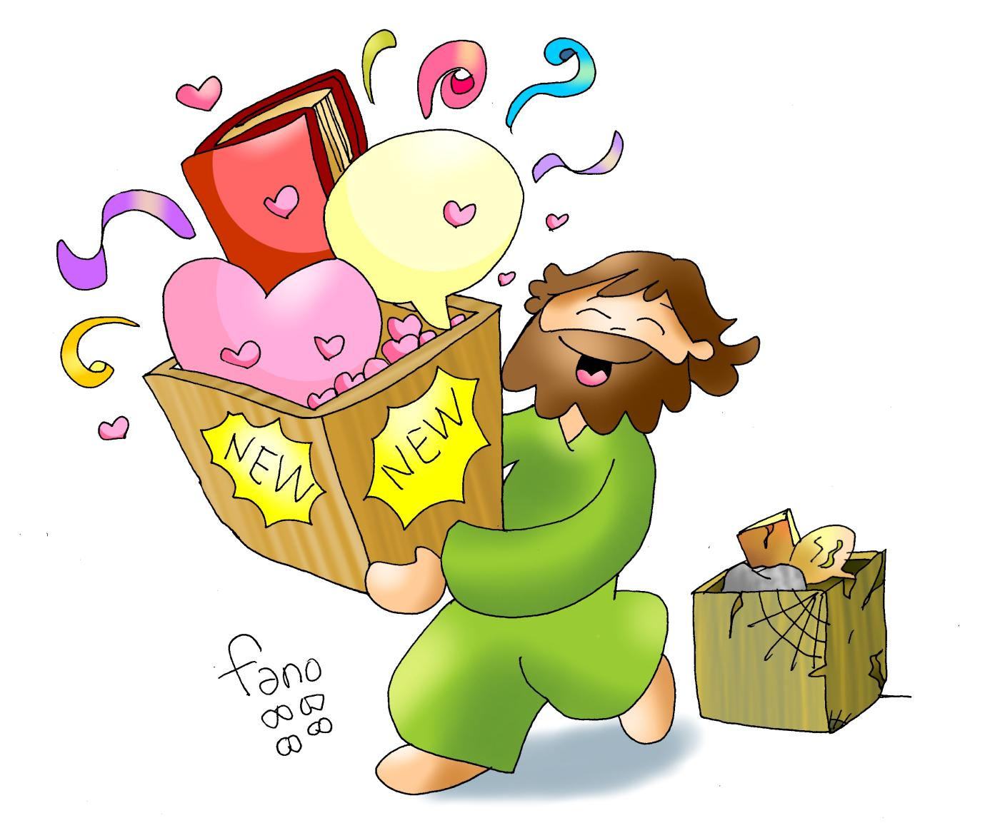

l XXIX Domingo del Tiempo Ordinario
18 de octubre de 2026


HE VENIDO A SERVIR
Quien quiera ser grande,
quien quiera ser el primero,
sea el esclavo de todos,
sea el más pequeño.
No he venido a ser servido,
que he venido a servir
y a dar la vida por todos
para que todos puedan vivir (2)
en
plenitud (3).

LITURGIA DE LA PALABRA
Escuchemos la Palabra de Dios

ACTO PENITENCIAL
Yo confieso ante Dios todopoderoso
y ante vosotros, hermanos,
que he pecado mucho de pensamiento, palabra, obra y omisión:
por mi culpa, por mi culpa, por mi gran culpa.
Por eso ruego a Santa María, siempre Virgen,
a los ángeles, a los santos y a vosotros, hermanos,
que intercedáis por mí ante Dios, nuestro Señor.

l XXIX Domingo del Tiempo Ordinario · Mt 22,15-21

ALABO TU BONDAD (1/2)
Todo mi ser canta hoy
por las cosas que hay en mí.
Gracias te doy mi Señor,
Tú me haces tan feliz.
Tú me has regalado tu amistad,
confío en ti, me llenas de tu
Tú me haces sentir tu gran bondad,
yo cantaré por siempre tu fidelidad.
GLORIA A TI, SEÑOR POR TU BONDAD.
GLORIA, GLORIA,
SIEMPRE CANTARÉ TU FIDELIDAD.
GLORIA A TI, SEÑOR POR TU BONDAD.
GLORIA, GLORIA,
SIEMPRE CANTARÉ TU FIDELIDAD.
ALABO TU BONDAD (2/2)
Siempre a tu lado estaré
alabando tu bondad
A mis hermanos diré
el gran gozo que hallo en ti.
En ti podrán siempre encontrar
fidelidad, confianza y amistad.
Nunca fallara tu gran amor,
ni tu perdón. Me quieres tal como soy
GLORIA A TI, SEÑOR POR TU BONDAD.
GLORIA, GLORIA,
SIEMPRE CANTARÉ TU FIDELIDAD.
GLORIA A TI, SEÑOR POR TU BONDAD.
GLORIA, GLORIA,
SIEMPRE CANTARÉ TU FIDELIDAD.
PRIMERA LECTURA
Is 45,1.4-6
Así dice el Señor a su Ungido, a Ciro, a quien lleva de la mano: «Doblegaré ante él las naciones, desceñiré las cinturas de los reyes, abriré ante él las puertas, los batientes no se le cerrarán. Por mi siervo Jacob, por mi escogido Israel, te llamé por tu nombre, te di un título, aunque no me conocías. Yo soy el Señor y no hay otro; fuera de mí, no hay dios. Te pongo la insignia, aunque no me conoces, para que sepan de Oriente a Occidente que no hay otro fuera de mí. Yo soy el Señor, y no hay otro.»

SALMO RESPONSORIAL
Sal 95,1 — Aclamad la gloria y el poder del Señor
Cantad al Señor un cántico nuevo, cantad al Señor, toda la tierra.
Contad a los pueblos su gloria, sus maravillas a todas las naciones.
Porque es grande el Señor, y muy digno de alabanza, más temible que todos los dioses.
Pues los dioses de los gentiles son apariencia, mientras que el Señor ha hecho el cielo.
Familias de los pueblos, aclamad al Señor, aclamad la gloria y el poder del Señor, aclamad la gloria del nombre del Señor, entrad en sus atrios trayéndole ofrendas.
Postraos ante el Señor en el atrio sagrado, tiemble en su presencia la tierra toda; decid a los pueblos: «El Señor es rey, él gobierna a los pueblos rectamente.»

SEGUNDA LECTURA
Tes 1,1-5b
Pablo, Silvano y Tirnoteo a la Iglesia de los tesalonicenses, en Dios Padre y en el Señor Jesucristo. A vosotros, gracia y paz. Siempre damos gracias a Dios por todos vosotros y os tenemos presentes en nuestras oraciones. Ante Dios, nuestro Padre, recordarnos sin cesar la actividad de vuestra fe, el esfuerzo de vuestro amor y el aguante de vuestra esperanza en Jesucristo, nuestro Señor. Bien sabemos, hermanos amados de Dios, que él os ha elegido y que, cuando se proclamó el Evangelio entre vosotros, no hubo sólo palabras, sino además fuerza del Espíritu Santo y convicción profunda.

ALELUYA (Leonard Cohen)
Quiero escuchar tu corazón,
conozco el sonido de tu voz,
abrázame con tu palabra, Padre.
Ayúdanos a comprender
que hay tantas cosas por hacer,
regálanos tus manos, aleluya.
ALELUYA, ALELUYA,
ALELUYA, ALELU…
ALELUYA, ALELUYA,
ALELUYA, ALELUYA
EVANGELIO
Mt 22,15-21
En aquel tiempo, se retiraron los fariseos y llegaron a un acuerdo para comprometer a Jesús con una pregunta.Le enviaron unos discípulos, con unos partidarios de Herodes, y le dijeron: «Maestro, sabemos que eres sincero y que enseñas el camino de Dios conforme a la verdad; sin que te importe nadie, porque no miras lo que la gente sea. Dinos, pues, qué opinas: ¿es licito pagar impuesto al César o no?»Comprendiendo su mala voluntad, les dijo Jesús: «Hipócritas, ¿por qué me tentáis? Enseñadme la moneda del impuesto.»Le presentaron un denario. Él les preguntó: «¿De quién son esta cara y esta inscripción?»Le respondieron: «Del César.»Entonces les replicó: «Pues pagadle al César lo que es del César y a Dios lo que es de Dios.»; Palabra del Señor

LITURGIA EUCARÍSTICA
Preparémonos para la mesa del Señor
CREDO
Creo en Dios, Padre todopoderoso,
creador del cielo y de la tierra.
Creo en Jesucristo, su único Hijo, nuestro Señor,
que fue concebido por obra y gracia del Espíritu Santo;
nació de Santa María Virgen; padeció bajo el poder de Poncio Pilato;
fue crucificado, muerto y sepultado; descendió a los infiernos;
al tercer día resucitó de entre los muertos;
subió a los cielos y está sentado a la derecha de Dios Padre todopoderoso.
Desde allí ha de venir a juzgar a vivos y muertos.
Creo en el Espíritu Santo, la santa Iglesia católica,
la comunión de los santos, el perdón de los pecados,
la resurrección de la carne y la vida eterna. Amén.
l XXIX Domingo del Tiempo Ordinario · Mt 22,15-21

TOMA MI VIDA (1/2)
Esto que te doy es vino y pan señor.
Esto que te doy es mi trabajo.
Es mi corazón, es mi alma,
es mi cuerpo y mi razón,
el esfuerzo de mi caminar...
Esto que te doy mi vida es señor.
es mi amor también es mi dolor.
Es la ilusión de mis sueños,
es mi gozo y mi llorar,
es mi canto y mi oración.
TOMA MI VIDA, PONLA EN TU CORAZÓN.
DAME TU MANO Y LLÉVAME.
CAMBIA MI PAN EN TU CARNE
Y MI VINO EN TU SANGRE
Y A MI SEÑOR RENUÉVAME,
LÍMPIAME Y SÁLVAME
TOMA MI VIDA (2/2)
Esto te lo doy, no solo, mi Señor,
esta voz también es mi hermano.
Es la unión, la paz y el orden,
la armonía y felicidad,
es un canto en comunidad.
TOMA MI VIDA, PONLA EN TU CORAZÓN.
DAME TU MANO Y LLÉVAME.
CAMBIA MI PAN EN TU CARNE
Y MI VINO EN TU SANGRE
Y A MI SEÑOR RENUÉVAME,
LÍMPIAME Y SÁLVAME
l XXIX Domingo del Tiempo Ordinario · Mt 22,15-21

SEÑOR SANTO
Señor santo, Dios del universo, Tú.
Llenos están cielo y tierra de tu gloria.
Bendito aquél que viene
en nombre del señor.
Hosanna en el cielo. (bis)
l XXIX Domingo del Tiempo Ordinario · Mt 22,15-21

PADRE NUESTRO (Gallego) (1/2)
En el mar he oído hoy
Señor tu voz que me llamó
y me pidió que me entregara
a mis hermanos.
Esa voz me transformó,
mi vida entera ya cambió,
y sólo pienso ahora Señor
en repetirte:
PADRE NUESTRO
EN TI CREEMOS,
PADRE NUESTRO
TE OFRECEMOS,
PADRE NUESTRO
NUESTRAS MANOS
DE HERMANOS.
PADRE NUESTRO (Gallego) (2/2)
Cuando vaya a otro lugar
tendré Señor que abandonar
a mi familia a mis amigos
por seguirte.
Pero sé que así algún día
podré enseñar tu verdad,
ir a mi hermano y junto a él
yo repetirte.
PADRE NUESTRO
EN TI CREEMOS,
PADRE NUESTRO
TE OFRECEMOS,
PADRE NUESTRO
NUESTRAS MANOS
DE HERMANOS.
l XXIX Domingo del Tiempo Ordinario · Mt 22,15-21
PAZ EN LA TIERRA
PAZ EN LA TIERRA,
PAZ EN LAS ALTURAS.
QUE EL GOZO ETERNO REINE
EN NUESTRO CORAZÓN. (BIS)
Da la paz, hermano, da la paz.
Constrúyela en tu corazón
y con tu gesto afirmarás
que quieres la paz.
Que tu paz, hermano, sea don;
es el mejor signo de amor
que Tú nos puedes ofrecer,
abrazo de paz.
l XXIX Domingo del Tiempo Ordinario · Mt 22,15-21
TODO MI SER
Todo mi ser, todo lo que soy
te pertenece sólo a ti.
Desde mi pobreza,
Tú eres la fuerza.
Nada sé, sólo que caminaré.
LLEGASTE A MI VIDA CON TU LUZ,
CAMBIASTE MI MENTE CON TU AMOR,
VACIASTE MI ALMA Y AHORA ESTÁS
DENTRO DE MÍ.
Todo mi ser, todo lo que soy,
lo bueno y lo malo la pongo a tus pies.
Aunque a veces llegues a mi templo
y lo encuentres ya lleno,
no es verdad, sólo se llena
cuando Tú moras en él.
l XXIX Domingo del Tiempo Ordinario · Mt 22,15-21

A TU AMPARO Y PROTECCIÓN
A TU AMPARO Y PROTECCIÓN,
MADRE DE DIOS, ACUDIMOS.
NO DESOIGAS NUESTROS RUEGOS
Y DE TODOS LOS PELIGROS,
VIRGEN GLORIOSA Y BENDITA,
DEFIENDE SIEMPRE A TUS HIJOS
l XXIX Domingo del Tiempo Ordinario · Mt 22,15-21

QUIERO VIVIR AMANDO (1/3)
No me resigno y busco siempre más,
no me conformo con ser un mediocre.
Quiero tenerte cerca al caminar
sólo contigo brillaré en la noche.
SI NO HAY AMOR, TODO ES MENTIRA
SI NO HAY AMOR,
TODO LO QUE VIVO PIERDE SU COLOR
Podría amontonar todo el saber,
y ser el tío más listo de la tierra.
Podría dedicarme a resolver,
todos los males y todas las guerras.
QUIERO VIVIR AMANDO (2/3)
SI NO HAY AMOR, TODO ES MENTIRA
SI NO HAY AMOR,
TODO LO QUE VIVO PIERDE SU COLOR
QUIERO VIVIR AMANDO, QUIERO VIVIR
QUIERO VIVIR AMANDO, QUIERO VIVIR
Podría querer ser tu seguidor,
dejarme quemar vivo a fuego lento
y ganar cada mes más de un millón
y repartirlo todo a los hambrientos.
SI NO HAY AMOR, TODO ES MENTIRA
SI NO HAY AMOR,
TODO LO QUE VIVO PIERDE SU COLOR
QUIERO VIVIR AMANDO, QUIERO VIVIR
QUIERO VIVIR AMANDO, QUIERO VIVIR O MORIR
QUIERO VIVIR AMANDO (3/3)
El amor es servicio y no lleva cuentas del mal
el amor no presume, no es egoísta.
El amor no se engríe,
no se irrita ni te trata mal.
También es comprensivo, no tiene envidia.
Disculpa y cree sin límites.
Espera y aguanta sin límites.
El amor nunca pasará.
SI NO HAY AMOR, TODO ES MENTIRA
SI NO HAY AMOR,
TODO LO QUE VIVO PIERDE SU COLOR
QUIERO VIVIR AMANDO, QUIERO VIVIR
QUIERO VIVIR AMANDO, QUIERO VIVIR
Quiero vivir amando, porque el amor es Dios.
Quiero vivir amando, porque el amor es Dios.
¡ID EN PAZ!
Somos uno · 18 de octubre de 2026
La paz del Señor esté siempre con vosotros.
«¿Qué os parece? Un hombre tenía dos hijos. Se acercó al primero y le dijo: «Hijo, ve hoy a trabajar en la viña.»